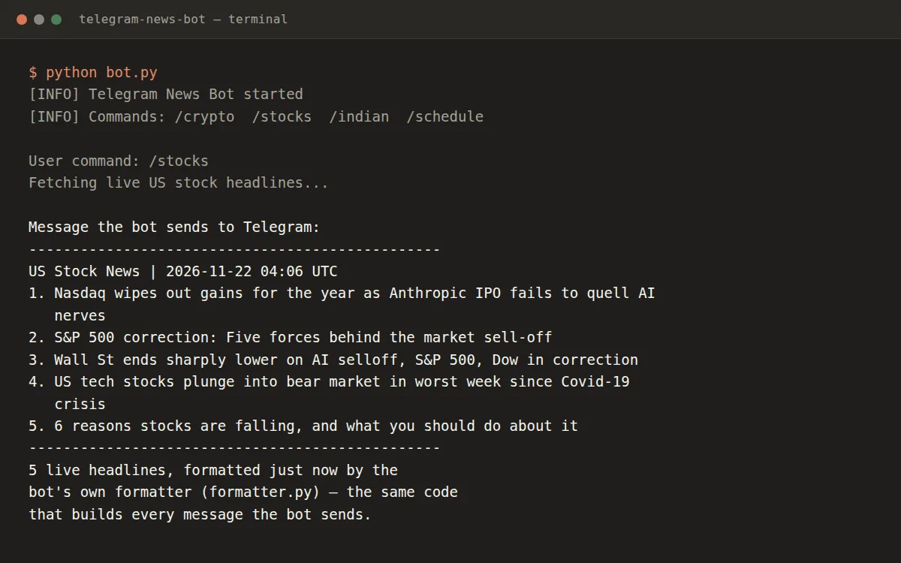

I'm a Python developer building Telegram bots, automation tools and lightweight AI-agent software. On GitHub, I'm @shubhranillayek. I also build browser applications with JavaScript, HTML and CSS.
Proof, not just claims: my pull requests have been merged into open-source projects (pulse and Tadpole), with more under review, including in the Anthropic SDK. Everything I build is public — see it on GitHub.
Selected original projects
These are my original repositories, with source code and documentation linked directly. The web applications include live demos.

Python
Telegram News Bot
PythonTelegram Bot APISQLitehttpxNews APIs & RSS
A Python Telegram bot for crypto, US stock and Indian stock news, with on-demand commands, daily UTC schedules and SQLite-backed schedule storage.
Problem: Market news sits scattered across sources, and checking it manually every morning is slow and easy to skip.
What I built: A Telegram bot that fetches crypto, US stock and Indian stock news, answers on-demand commands, and sends daily updates on a UTC schedule the user sets — schedules are stored in SQLite, so they survive restarts.
Result: News arrives inside Telegram on its own, every day, with no app to open and nothing to remember. Full source and setup docs are on GitHub.
A lightweight Python 3.10+ agent toolkit with registered tools, type-hint schemas and bounded conversation history. Version 0.1.0 is alpha and requires your own LLM adapter.
Problem: Every new AI agent project starts by rewriting the same tool-calling loop, tool schemas and conversation handling from scratch.
What I built: A small Python toolkit where you register tools with type hints, plug in your own LLM adapter, and get a configurable agent loop with bounded conversation memory — no framework lock-in.
Result: Published as open source at version 0.1.0 (alpha), with documentation and examples, so a working tool-using agent takes a few lines instead of a fresh rewrite.
An n8n workflow (no code) that connects Telegram to Google Gemini (AI Studio): you message the bot, Gemini answers, and the reply comes back on Telegram. Import it into n8n, add a BotFather token and a free Gemini API key, and switch it on.
An earlier real-estate landing-page project showcasing a residential development in Durgapur, with project highlights, amenities, location details, an image gallery and a site-visit enquiry form.
An earlier Python Telegram bot that tracked the price of products on Flipkart and Amazon, and sent an alert on Telegram whenever a price went up or down.
What I build
Telegram bots
Bots for news, prices, enquiries and daily work — commands, buttons, schedules and alerts inside Telegram.
Also: WhatsApp automation, browser automation, price-tracking and affiliate tools, marketing automation, and small data utilities.
Work with me
I'm a final-year BCA student at Bengal College of Engineering and Technology (BCET) in Durgapur, graduating in July 2027. For the last 2-3 years I have been building software through my own projects - Telegram bots, automation tools and AI agents.
I take on freelance projects: websites for shops and small businesses, Telegram bots for a business or community, WhatsApp chatbots, automation tools that take over repetitive work, and small AI agents and chatbots. If you have something like this in mind, here is how it usually goes:
Tell me what you need: send me an email with what the bot or tool should do.
Plan and timeline: I reply with how I would build it and how long it should take.
I build it: you get updates as it comes together, not silence.
Delivery and support: I hand it over working, and help if something needs fixing.
Shubhranil Layek is the Python developer behind the GitHub account @shubhranillayek, with original projects in Telegram automation, AI-agent tooling and browser apps.
Which project demonstrates Telegram bot automation?
Telegram News Bot supports news commands and daily UTC schedules with SQLite-backed schedule storage. Its README explains configuration and deployment requirements.
Which AgentForge is yours?
My project is shubhranillayek/agentforge, a Python 3.10+ toolkit currently classified as alpha. It is a separate repository from other projects using the AgentForge name. You supply its LLM adapter; it is not a hosted AI service.
Where can I try the web applications?
Open WeatherNow for weather and air-quality views, or play Tic-Tac-Toe against minimax AI or a second player on one device.
Where is Shubhranil Layek based?
Shubhranil Layek is based in Durgapur, West Bengal, India, and builds open-source projects and client work remotely.
Is Shubhranil Layek available for freelance work?
Yes. He is open to freelance projects and collaborations involving Python automation, Telegram bots and AI agents. The fastest way to reach him is via GitHub (@shubhranillayek) or email at subhralayek7@gmail.com.